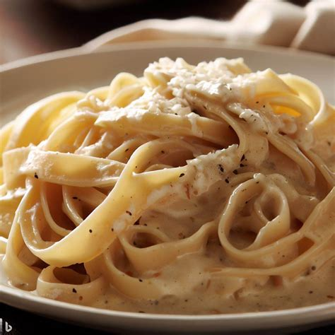

Home Page
Fettuccine Alfredo

Description
Delicious italian dish, famous around the world for it's creamy, cheesy texture, along with it's potent smell and taste.
Ingredients
- Stick of salted butter
- Minced Garlic
- Evaporated Milk
- Pasta Noodles (of your choice)
- 1 bag of shredded parmesan cheese
Optional:
- Salt
- Black Pepper
- Nutmeg
- Parsley
Steps
- Prepare the Kitchen
- Get 1 stick of butter
- 1 spoonful of minced garlic
- Non-stick saucepan
Heat saucepan on medium and cut a decent size of butter into the pan. When the ends of the pan bubbles insert the spoonful of
minced garlic. Give it about 1 min then change the temperature to low.
- Slow and Easy Wins the Race
- Grab the can of evaporated milk (can be replaced with either half n half or condensed milk)
and pour into the saucepan.
- With the temperature on low, wait until the ends of the pan are slightly bubbling
then pour in the bag of parmesan cheese.
-
Slightly mix then wait for the cheese to completely melt leaving a creamy texture.
The last step might take some time and requires patiences, so while we wait lets prepare our pasta.
- Boiling Pasta
- Find a large pot that's big enough for the amount of pasta noodles you desire.
- Fill almost completely with water.
(keep in mind you still have to be able to fit in all your pasta).
- Set temperature to high and boil the water until it's bubbling.
- Throw in a generous amount of salt into the boiling water.
- Place the uncooked pasta into the boiling water, then cover with a top.
- Lower the temperature to medium then wait about 20 mins or until the pasta is floating.
- Stir occasionally (this is to prevent pasta from sticking).
- Final Touches
- Once pasta is cooked place all the noodles into the saucepan.
- Mix, evenly distributing the sauce over noodles.
- While mixing add black pepper to your liking, and a little bit of nutmeg.
- Viola, your fettuccine alfredo is ready for serving!